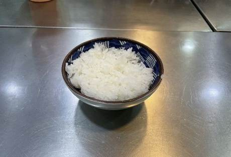
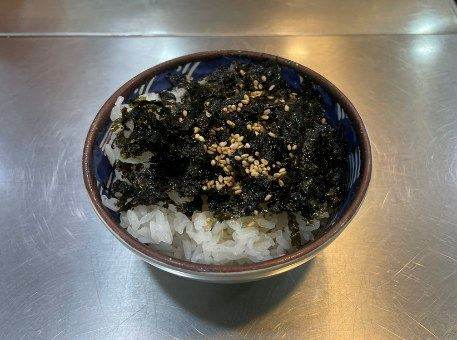

| 메뉴명 | 후식 김가루밥 |
|---|---|
| 판매가격 | 1,500원 |
| 원재료 | 밥, 김가루, 참기름, 깨 |
| 사용 부자재 | 우동국물 용기 또는 덮밥접시 |
조리방법

1
팩 한쪽을 뜯어서 밀폐통 또는 바트에 국물째 옮겨 담고, 깨끗한 집게로 덜어서 사용합니다.
(*냉장보관)
2. 반드시 뚜껑을 덮고 사용하며, 개봉 후 소비기한 1개월 이내 사용합니다.
3. 제품 한글표시사항을 보관하고, 소분스티커를 부착합니다.
팩 한쪽을 뜯어서 밀폐통 또는 바트에 국물째 옮겨 담고, 깨끗한 집게로 덜어서 사용합니다.
(*냉장보관)
2. 반드시 뚜껑을 덮고 사용하며, 개봉 후 소비기한 1개월 이내 사용합니다.
3. 제품 한글표시사항을 보관하고, 소분스티커를 부착합니다.

2
참기름 3g을 뿌라고, 김가루 5g, 깨를 뿌려 완성한다.
참기름 3g을 뿌라고, 김가루 5g, 깨를 뿌려 완성한다.
※ 춘천 닭갈비 떡볶이 사이드 메뉴로 판매합니다.
냉면용 흰김치 보관 방법